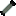

Générateur radioisotopique
Publicité
Alternative aux réacteurs
Le générateur radioisotopique produit de l'électricité à partir de la chaleur de désintégration radioactive des matériaux. Pas de vapeur, pas de turbine — simple et compact.
Utilisation
Placez simplement un objet radioactif dans le générateur. Il commence immédiatement à produire de l'énergie. Aucune configuration requise.
Production d'énergie
La puissance produite dépend de deux facteurs :
- Niveau de radioactivité de l'item — plus il est radioactif, plus il produit
- Quantité d'items — empiler plusieurs items multiplie la production
Items compatibles
Tout item radioactif fonctionne. Consultez la page Radiation pour voir quels items émettent des radiations. Les plus efficaces :
Polonium 210
Très radioactif
Très radioactif
Plutonium 239
Très radioactif
Très radioactif
Uranium 235
Radioactif
Radioactif

Combustible uséRadioactif
Bon départ
Le générateur radioisotopique est idéal en début de partie pour produire de l'énergie sans construire un réacteur complet. Utilisez vos premiers minerais d'uranium pour démarrer.